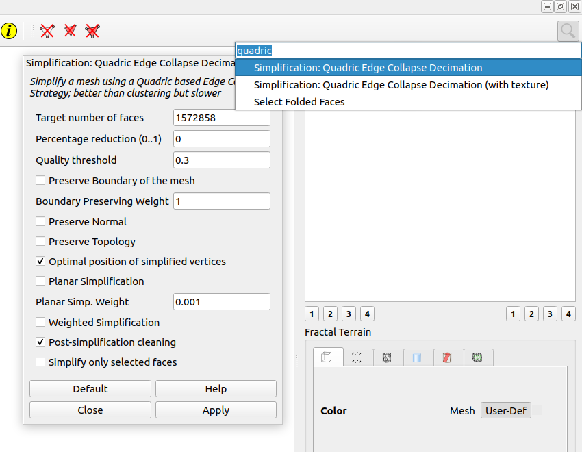
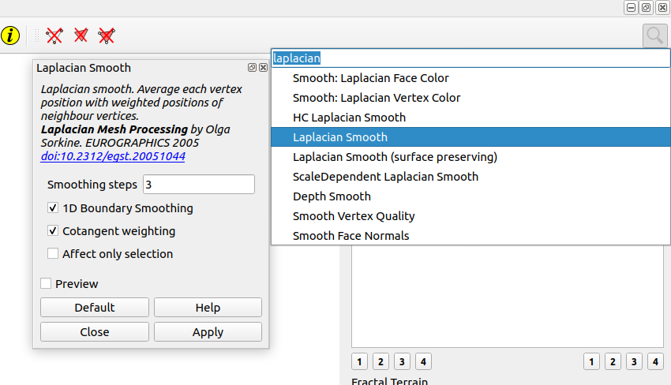
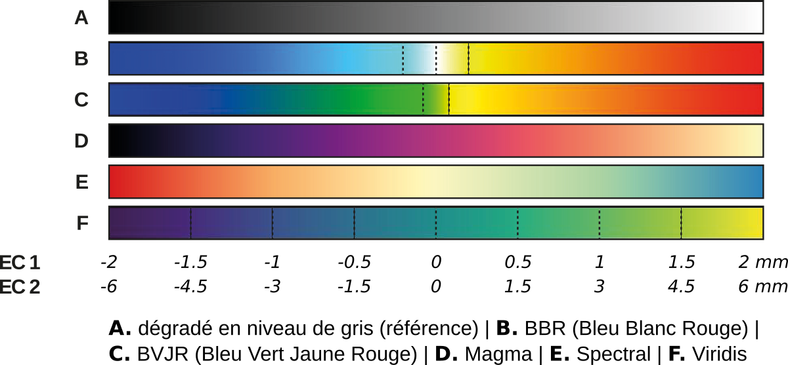

Définition
Les cartes des écarts sont le résultat d'une comparaison entre une représentation détaillée et simplifiée de la surface.
En fonction du degré de simplification du maillage, plus ou moins d'information peuvent ressortir. Deux niveaux d'information sont systématiquement générés :
- EC1 : pour mettre en évidence des détails techniques de réalisation (comme les impacts de percussion)
- EC2 : pour mettre en évidence une composition plus globale — ce niveau d'information permet de faire le relevé des gravures
Préparation des données
Préparation des maillages de comparaison
Dans Meshlab,
- Pour produire EC1 :
- Ouvrir le maillage au format *.ply
- Chercher la fonction `Simplification : Quadric Edge Mesh Decimation"
- Percentage reduction (0..1) = 0.25
- Chercher la fonction `Laplacian Smooth`
- Smoothing Steps = 3 ; Apply ; Close
- Enregistrer le maillage sous le nom `[Nom du fichier initial]_EC1.ply`
- Pour produire EC2 : répéter exactement les étapes de b à d
- Enregistrer le maillage sous le nom `[Nom du fichier initial]_EC2.ply`
Illustration de l'étape 1b :

Illustration de l'étape 1d :

Calcul des écarts
Dans CloudCompare,
- Importer les fichiers nuage de points et les maillages EC1 et EC2 :
- `6_C_[Nom du fichier]_5dmm.ply`
- `6_M_[Nom du fichier]_EC1.ply`
- `6_M_[Nom du fichier]_EC2.ply`
- Premier passage
- Calculer la distance entre EC1 et le nuage de points
- Appliquer le dégradé en niveau de gris
- Régler les extrema en fonction de la répartiion des valeurs sur l'histogramme (en général : -2mm ; +2mm)
- Convertir le scalar field en RGB
- Création d'un maillage (algorithme Poisson ; Résolution : 1mm)
- Enregistrer le maillage sous le nom `6_M_[Nom du fichier]_EC1-2mm.ply`
- Second passage
- Calculer la distance entre EC2 et le nuage de points
- Appliquer le dégradé en niveau de gris
- Régler les extrema en fonction de la répartiion des valeurs sur l'histogramme (en général : -6mm ; +6mm)
- Convertir le scalar field en RGB
- Création d'un maillage (algorithme Poisson ; Résolution : 1mm)
- Enregistrer le maillage sous le nom `6_M_[Nom du fichier]_EC2-6mm.ply`
Optimisation des maillages
Si le modèle 3D est généré dans CloudCompare pour avoir une résolution de 1mm, il se trouve que le maillage est légèrement plus dense... Pour augmenter la rapidité des traitements à venir, il est judicieux de l'optimiser.
Dans Meshlab,
- Ouvrir les maillages
- `6_M_[Nom du fichier]_EC1-2mm.ply`
- `6_M_[Nom du fichier]_EC2-6mm.ply`
- Chercher la fonction `Merge Close Vertices`
- Dans la case `World Unit`, indiquer `0.001`
- Appliquer
- Enregistrer les maillages sous leur même nom
Exemple de gain suite à l'opération :
- Avant | Après | Réduction (%)
- ... | ... | ...
Mise en oeuvre
- Supprimer ou désactiver le rendu du maillage déjà présent dans la scène
- Importer le maillage `..._EC1-#mm.ply`
- Onglet 1 : Masquer la sphère témoin.
- Onglet 2 : Appliquer le matériau `R3_EC`.
- Onglet 3 : Connecter `Ouput 1` avec `R3_EC`. Casser toute autre liaison que celle-ci.
- Onglet 3 : Vérifier que chacun des noeuds terminaux soient connectés sur la puce `...EC1-...` et remplacer la valeur `#mm` en accord avec le maillage importé
- Onglet 3 : Sélectionner le moteur de rendu EEVEE.
- Onglet 3 : Render all cameras.
- Importer le maillage `..._EC2-#mm.ply`
- Onglet 2 : Appliquer le matériau `R3_EC`.
- Onglet 3 : Connecter `Ouput 1` avec `R3_EC`. Casser toute autre liaison que celle-ci.
- Onglet 3 : Vérifier que chacun des noeuds terminaux soient connectés sur la puce `...EC1-...` et remplacer la valeur `#mm` en accord avec le maillage importé
- Onglet 3 : Sélectionner le moteur de rendu EEVEE.
- Onglet 3 : Render all cameras.
Les images sont alors enregistrées dans le dossier à la racine du projet nommé `TEMP`.
Note : En général, les valeurs utilisées sont :
- EC1-2mm / EC2-6mm
- EC1-15dmm / EC2-[il n'y a pas de règle]
Liste des images produites et leurs caractéristiques
Structure du nom des fichiers générés :
[Nom complet du fichier décliné]_[Nom du dégradé].jpg
Liste des fichiers :
- Cam-##_R3_EC1-#mm.png
- Cam-##_R3_EC1-#mm_BBR.jpg
- Cam-##_R3_EC1-#mm_BVJR.jpg
- Cam-##_R3_EC1-#mm_Magma.jpg
- Cam-##_R3_EC1-#mm_Spectral.jpg
- Cam-##_R3_EC1-#mm_Viridis.jpg
- Cam-##_R3_EC2-#mm.png
- Cam-##_R3_EC2-#mm_BBR.jpg
- Cam-##_R3_EC2-#mm_BVJR.jpg
- Cam-##_R3_EC2-#mm_Magma.jpg
- Cam-##_R3_EC2-#mm_Spectral.jpg
- Cam-##_R3_EC2-#mm_Viridis.jpg
Les différents dégradés générés automatiquement (avec les extrema les plus couramment utilisés) :

Description du matériau (onglet 2)

Description du compositeur (onglet 3)
Les noeuds sont facilement explorables à travers l'interface Blender.
Pistes de recherche
Il existe un plugin pour Blender qui permet de calculer la distance entre deux maillages. Il n'y aurait donc plus de manipulation intermédiaire dans Meshlab et CloudCompare.
https://blendermarket.com/products/distance-map/docs
Utilisation du plugin Distance Map
- Sélectionner le maillage simplifier, puis le maillage HD (avec ctrl)
- Paramétrage de l'extension :
- Raycast mode : Normals
- Normalization Value : 0.00
- Sahding, description du matériau :
- On a une boîte "vertex color"
- Un "ColorRamp" (curseur noir placé à 0.5 / curseur blanc à 1). A remplacer le premier "ColorRamp" par "Map Range" pour contrôler les valeurs extrêmes?
- Un "colorRamp" pour appliquer le dégradé de couleur souhaité
- un Shader "Emission"
- "Material Output"